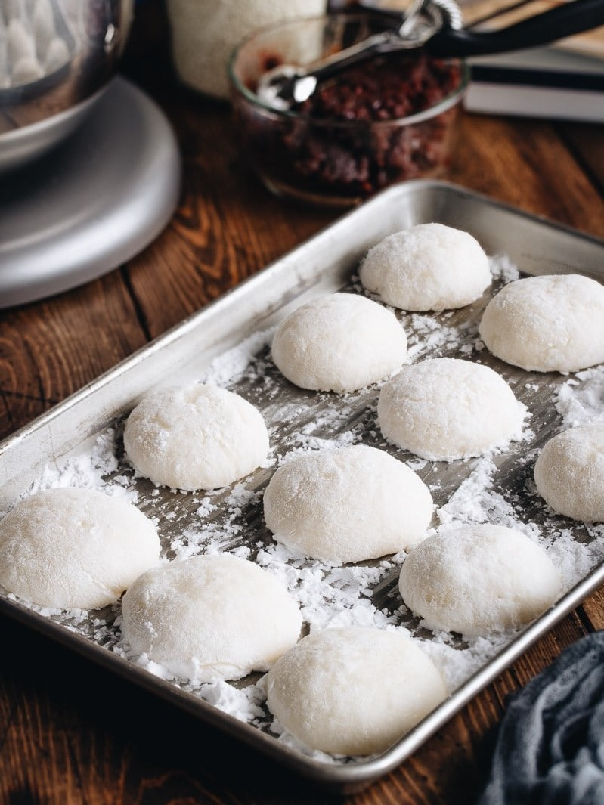

How to make Mochi
Regular mochi can easily be freshly home-made. This is a simple recipe to make Mochi with ingradients and instructions to help guide through the process!
Ingredients
- 1lb of Glutinuous Rice Flour
- 1/2 Cup of Coconut Milk
- 1/2 Cup of Unsweetened Condensed Milk
- 1 and 1/2 Cups of Water
- 3 Cups of Sugar
- Food Colouring of Choice
- Corn Starch
Total Required Time
- Preparation Time: 30 minutes
- Cooking Time: 2 hours
Instructions
- Sprinkle corn starch onto the work surface board so the Mochi doesn't stick!
- Pre-heat the oven to 230°C.
- Combine all the ingredients together in a large mixing bowl and whisk until there are no lumps left.
- Put the mixture onto a baking tray with aluminium foil and spray with non-stick oil.
- Place another layer of foil on top of the baking tray.
- Place the baking tray into the oven for an hour then allow it to cool and rest for an hour. The tray can be very hot!
- Once cooled, remove the foil from the top and flip to remove the bottom foil.
- Place the mixture onto the board with cornstarch.
- There will be crust around the edges that would need to be removed.
- Shape the mochi into the desired shape!
- Serve, share and enjoy the mochi!
Tip! The mochi can be specially packaged and be given as a gift to guests!
" width = "100%" height = "100%">